Comment fêter le Nouvel An chinois ?
Les célébrations, coutumes et tabous de la fête de printemps varient dans les détails selon les régions ou les époques. La pratique générale veut qu'on s'efforce de repartir sur un nouveau pied après s'être débarrassé des mauvaises influences de l’an passé, accompagné de signes de bon augure. On a recours à des objets ou aliments présentant une homophonie avec un mot de sens auspicieux.
To-do liste pendant la Fête du Printemps
- Cliquer sur une image pour voir toutes les descriptions
- 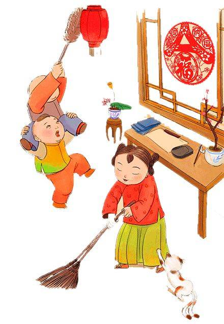
- 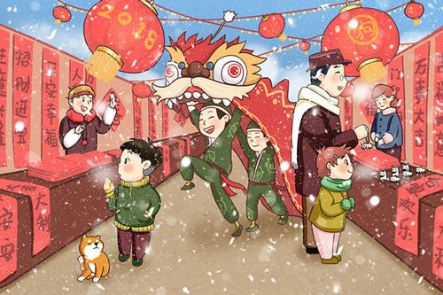
- 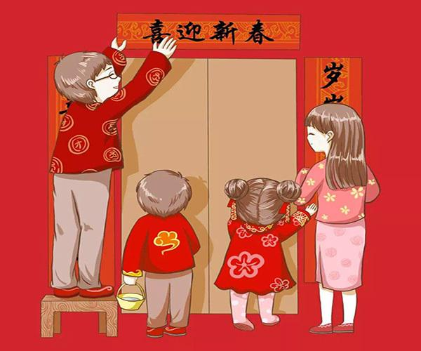
- 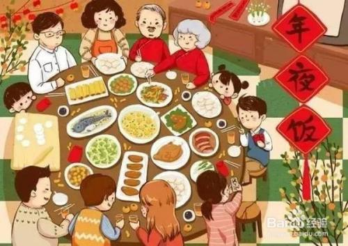
- 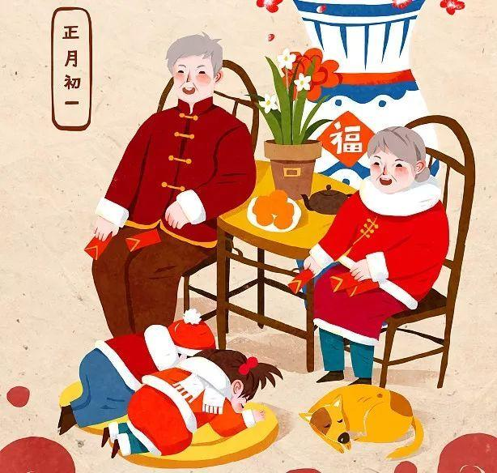
- 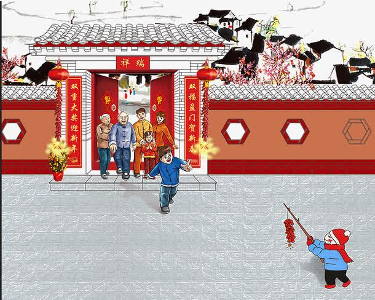
Le « passage de l’année » - 过年
Le « passage de l’année » ( 过年 guònián ) s’effectue dans la nuit du dernier jour du douzième mois. Le mot signifiant année est considéré comme étant à l’origine le nom d'un monstre, Nian, qui venait autrefois rôder autour des villages une nuit par an, obligeant les habitants à se calfeutrer et à veiller jusqu’à son départ au petit matin. Les célébrations principales comportent un réveillon ( 年夜饭 niányèfàn ) comprenant des plats aux noms auspicieux, suivi d’une nuit de veille ( 守岁 shǒusuì ) gage de longévité, que certains occupent à jouer au mahjong, la distribution d’étrennes ( 压岁钱 yāsuìqián ) contenues dans des enveloppes rouges (hóngbāo), l’allumage de pétards à mèches pour chasser les mauvaises influences.
Préparations
La semaine précédant le Nouvel An, traditionnellement le 23 ou le 24 du 12e mois, a lieu le « petit Nouvel An » ( 过小年 guòxiǎonián ), une cérémonie d'adieu au Dieu du Foyer ( 灶王爷 Zàowángyé ) dont l’effigie est collée dans la cuisine. D'après les croyances, il doit faire un long voyage pour rapporter, comme chaque année, les bonnes et mauvaises actions de la famille à l'Empereur de jade. Pour obtenir sa clémence, on dépose des aliments (plutôt collants, comme des bonbons) devant son image en espérant l'empêcher de dire du mal ; certains collent directement une sucrerie sur la bouche de son portrait. Celui-ci est brûlé, et le Génie s’envole avec la fumée. Un nouveau portrait sera affiché quelques jours plus tard, signalant son retour.
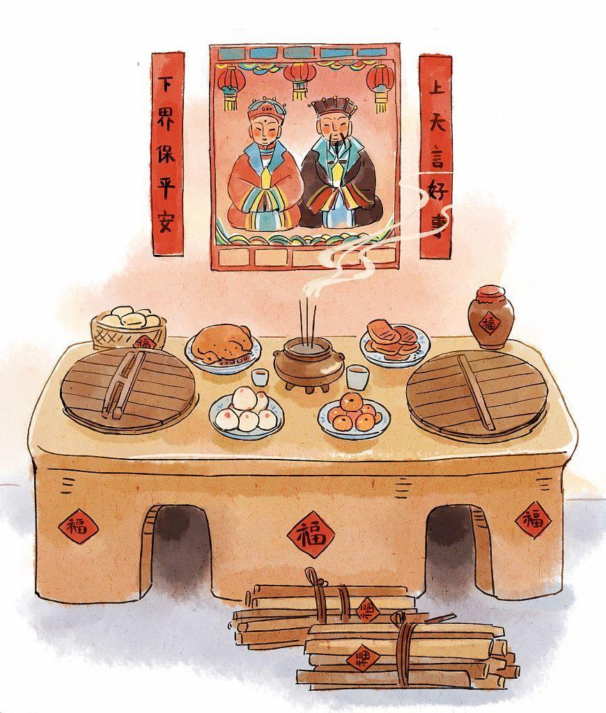
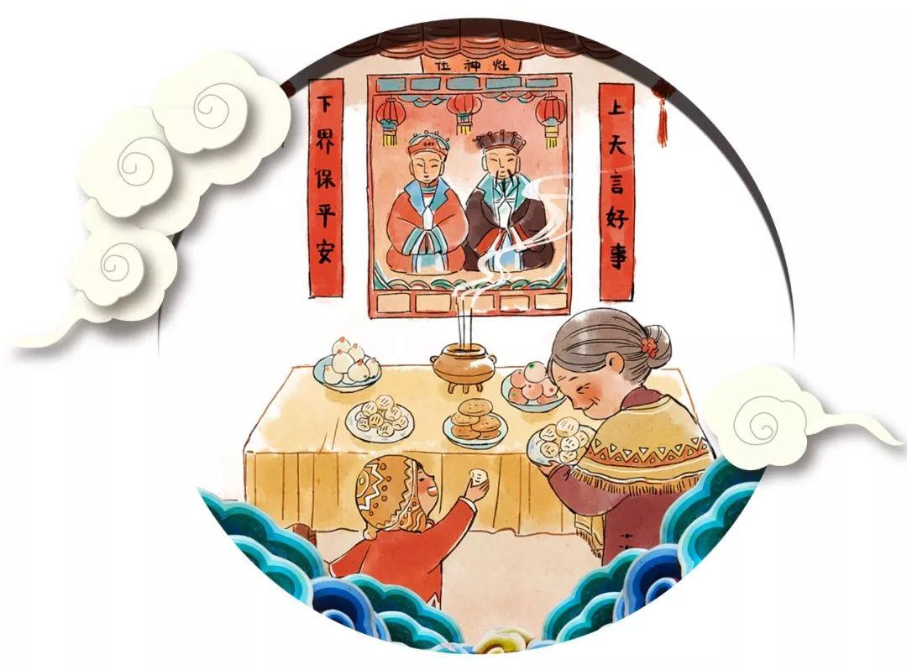
Le grand nettoyage de la maison est fait. Le dernier jour, on affiche un peu partout des souhaits écrits sur papier rouge, symbole de chance. Il s’agit de caractères auspicieux comme fú (福) bonheur, ou chūn (春) printemps, souvent collés à l’envers car renverser ( 倒 dào) est homophone d'arriver ( 到 dào). Un fu renversé signifie donc : « Le bonheur est arrivé. ».
Traditionnellement, de chaque côté des montants de la porte d’entrée, on colle une bande de papier rouge sur laquelle est écrit un vers ; les deux vers se répondent et constituent une inscription parallèle (對聯 / 对联 duìlián) ; elles étaient autrefois toujours écrites à la main, de préférence par des personnes aux dons littéraires et calligraphiques. Bien sûr, les décorations et inscriptions de l’an passé ont été tout d’abord retirées.
Des provisions sont faites, préparation importante autrefois, car tous les commerces fermaient pendant les congés. Elles comprennent beaucoup de choses à grignoter en famille : graines de pastèque, fruits secs, bonbons, etc. Faire les courses en vue du Nouvel An se dit bàn niánhuò ( 办年货 ). On faisait aussi l’achat de vêtements neufs, particulièrement pour les enfants. C'était auparavant une occasion bienvenue de renouveler sa garde-robe, mais avec le développement de l’industrie du prêt-à-porter, cette coutume a un peu perdu de sa valeur.
Réveillon
Le repas du Nouvel An a souvent lieu au domicile des aînés de la famille. Dans les régions au mode de vie traditionnel, du fait de la coutume patriarcale, il s'agit de la famille paternelle.
À l'heure du réveillon, le dîner ne peut commencer que lorsque toute la famille est présente (des places vides sont réservées aux membres ne pouvant pas assister au repas). Il est généralement copieux et comporte souvent des plats symboliques pour assurer la santé, les études, etc. Ainsi le poisson ( 鱼 yú), homophone de surplus ( 余 yú), doit être présent à chaque repas de Nouvel An pour garantir qu’il y aura du surplus tous les ans et qu’on ne manquera jamais de rien ; certains prennent même soin de ne pas le finir, afin de rendre plus complètement son sens symbolique.
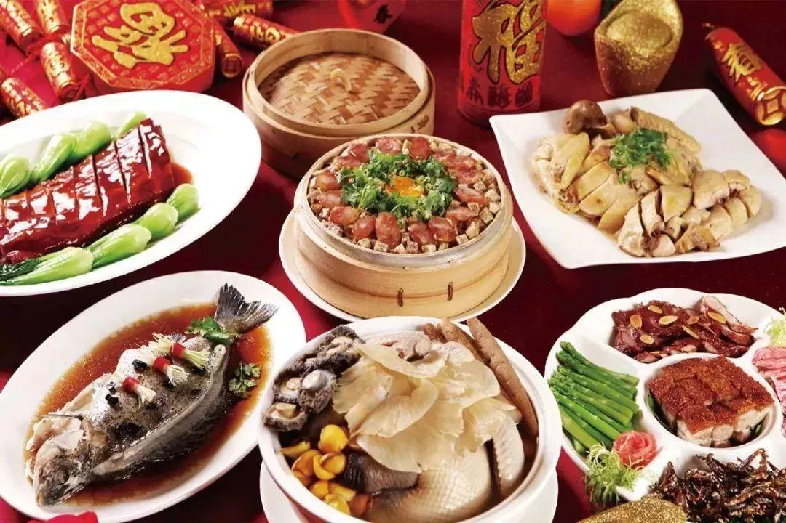

Dans le nord de la Chine, on sert en principe un plat de raviolis （jiǎozi 饺子 ）car leur forme évoque celle des yuánbǎo ( 元宝 ), lingots anciens. Le dessert traditionnel est le niángāo ( 年糕 ), « gâteau de l'An » ; gāo, gâteau, est homophone de grandir, et en manger constitue un gage de croissance dans tous les domaines souhaités.
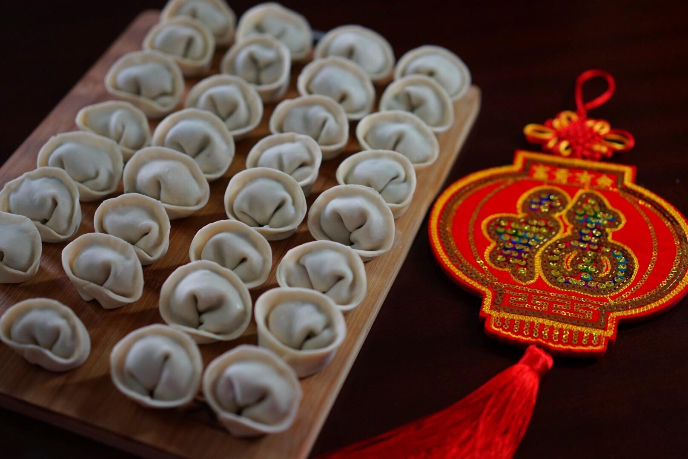
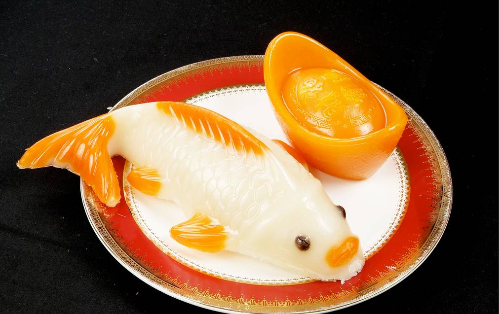
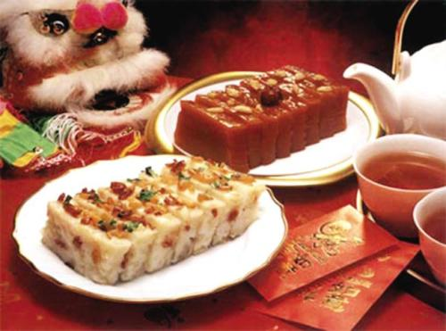
Des enveloppes rouges (étrennes) contenant de l’argent sont offertes. Traditionnellement, elles étaient distribuées par les aînés aux enfants et aux jeunes non mariés, et avaient surtout la valeur symbolique de porter chance durant toute la nouvelle année. Lors des distributions solennelles par les aînés, la personne qui va recevoir l’enveloppe leur adresse un vœu ou « parole auspicieuse » ( 吉祥话 jíxiáng huà) ; le plus courant est « félicitations, et faites fortune » (gōngxǐ fācái 恭喜发财 ).
Beaucoup d’enveloppes rouges contiennent une somme modeste, en nombre pair de billets, mais, il arrive que ce soit le moyen par lequel une personne professionnellement active remet à ses parents âgés ou à ses enfants toute une année d’argent de poche.
Toutefois, dans une distribution massive des enveloppes rouges( par ex. les temples, les institutions publiques…), il contient souvent d’une pièce de monnaie rounde avec la valeur « 1 »( par ex. €1), pour symbolise « la répétition a recommencer par le début » ( 一元复始 yī yuán fù shǐ). Lors des visites à la famille et aux amis, dans les jours qui suivent, il est coutume d’offrir une enveloppe aux enfants des visiteurs ou des visités ; beaucoup ont donc soin de s’approvisionner en petites coupures neuves avant la période de la fête.
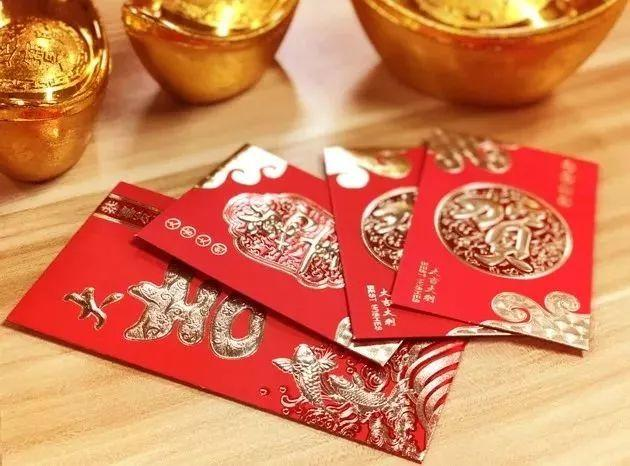
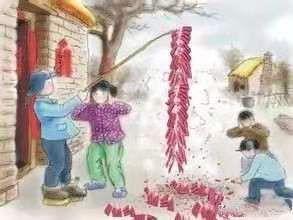
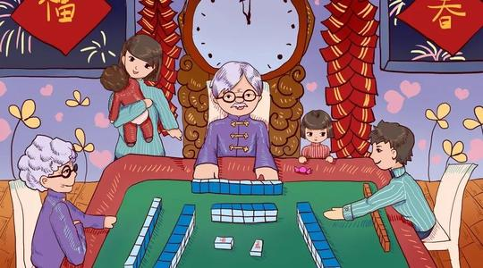
Les enfants étaient autorisés ce soir-là à faire éclater des pétards ou à faire brûler des feux de bengale, en attendant la chaîne de pétards que chaque foyer se devait d’allumer à l’arrivée du premier jour de l’année (minuit au xxie siècle, mais autrefois on changeait de jour à 11 h du soir). Néanmoins, à cause des accidents de plus en plus fréquents dus à la concentration urbaine, beaucoup de pays ont interdit les pétards privés. Des modèles électriques lumineux et sonorisés sont proposés sous le nom de « pétards électriques », avec un succès variable.
Tête de lion et queue du dragon. Une coutume ancienne veut qu’on aille se coucher le plus tard possible ce soir-là, car ce serait un gage de longévité ; cela s’appelle « monter la garde de l’année » (shǒusuì 守岁 ). Une télévision aide largement à remplir cet objectif, mais un jeu (mahjong par exemple) est aussi souvent choisi, d’autant que, pour certains, il est bon de tenter sa chance pendant la nuit du Nouvel An. Dans certaines régions, les jeux d’argent habituellement interdits, étaient exceptionnellement autorisés pendant la fête de printemps.
Premier jour de l’année
Si les règlements locaux le permettent, une chaîne de pétards est allumée dès onze heures ou minuit. Le matin, après un court repos, beaucoup se rendent au temple local, puis sur les tombes ancestrales s’ils habitent à proximité. On considère que plus la visite au temple est précoce, plus on aura de chance dans l’année. Il arrive donc que les fidèles se massent devant les grands temples avant l’ouverture des portes pour être le premier à planter sa baguette d’encens dans le brûle-parfum. Dans certaines villes, un temple ouvre à minuit, première heure du premier jour. Certains prennent ce jour au moins un repas végétarien. Les familles qui en avaient les moyens commandaient une danse de lion ou de dragon (qui représente Noblesse, Bravoure et Chance). Dans certaines cités hors de Chine comme Paris, la diaspora chinoise organise une parade ; la tradition a débuté à San Francisco dans la seconde moitié du xixe siècle.
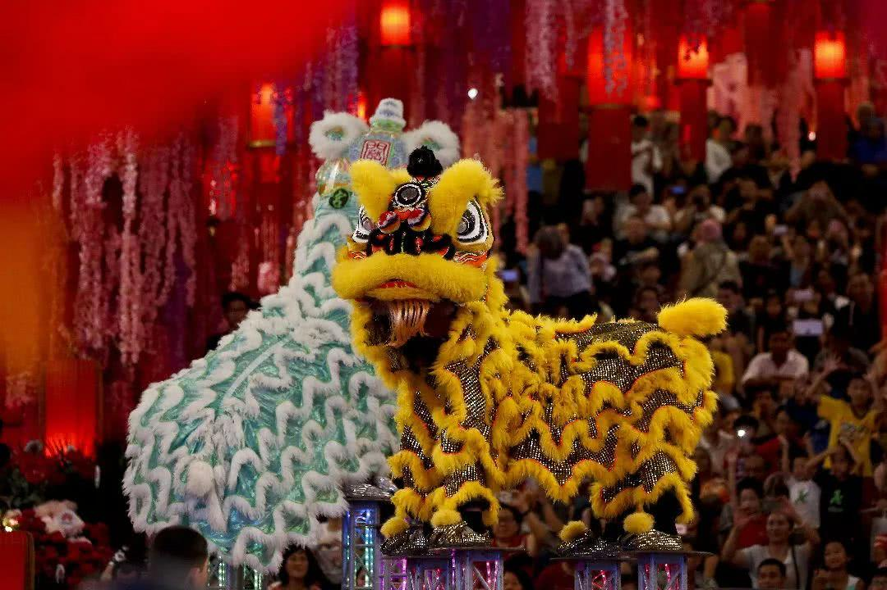
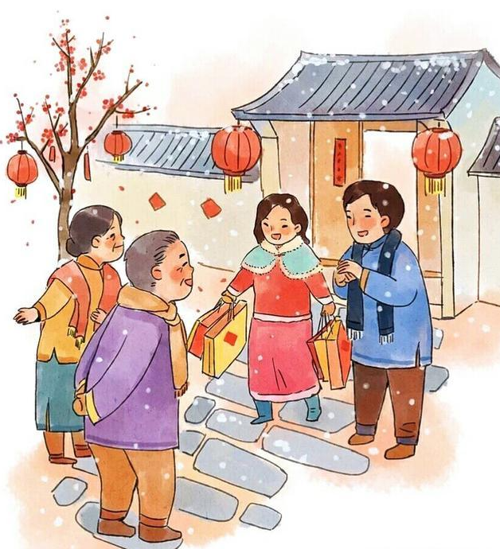
La première journée était théoriquement consacrée aux visites, en commençant par les personnes les plus importantes (parents aînés, supérieurs hiérarchiques) ; cette activité s'appelle « saluer l’année » (bàinián 拜年) ; de nos jours le téléphone est largement utilisé. Les familles en deuil sont traditionnellement exemptées de visites pendant une durée variable.
Le jour du Nouvel An, on doit théoriquement porter des vêtements neufs, et beaucoup aiment que du rouge, couleur auspicieuse, y apparaisse. On ne fait pas de ménage, et si l'on doit absolument balayer des détritus tombés à terre, il ne faut pas les déposer à l'extérieur du domicile car cela symboliserait une perte. Certains estiment qu'il est mauvais de faire une grande toilette ce jour-là.
Jours suivants
Le deuxième jour est traditionnellement celui où les femmes mariées rendent visite à leur famille avec enfants et mari. Dans certaines régions, les visites étaient déconseillées durant le troisième jour car elles étaient censées facilement donner lieu à des altercations (« bouche rouge » chìkǒu 赤口).
Le cinquième jour est en général celui où les commerces rouvrent. À Hong Kong c’est l’anniversaire du Dieu de la richesse. Des pétards sont allumés, et parfois des danses de lions commandées.
Le septième jour était pour certains celui où tout le monde changeait d’âge, les dates de naissances exactes étant autrefois tenues secrètes. D'autres, néanmoins, estiment que l’âge change le premier jour de la nouvelle année.
Le huitième ou neuvième jour — selon les régions — est l’anniversaire du dieu du Ciel (天公Tiāngōng ) assimilé à l’Empereur de jade. Une cérémonie se déroule chez soi ou au temple tard le soir, au début de la nouvelle journée.
Le quinze du premier mois est la dernière journée de la fête du printemps, marquée par la fête des lanternes.
La fête du Nouvel An chinois à Paris
La fête du Nouvel An chinois à Paris (ou fête du printemps) est une pratique célébrée depuis 1984 et inscrite à l'inventaire du patrimoine culturel immatériel en France3.
Chaque année, plusieurs événements sont organisés à Paris pour fêter le nouvel an chinois. Un grand défilé dans le quartier asiatique du 13e arrondissement s'inscrit comme l'évènement le plus important et le plus « ancien » de France en la matière. Chaque année, environ 200.000 personnes 4 assistent au traditionnel défilé, organisé par de nombreuses associations des communautés asiatiques. Pendant le défilé, les danses du dragon, danses des lions, défilé costumé, danses traditionnelles et danses folkloriques chinoises sont présentés par les grands et les petits.
En plus du défilé, de nombreux événements sur la culture et la gastronomie chinoise ont aussi eu lieu. Le Food Market et Mr Zhao ont organisé un marché gastronomique qui a rassemblé 25 des meilleurs restaurants chinois pour offrir une cuisine chinoise authentique5.
Des spectacles ont lieu dans les mairies pour présenter la richesse de la culture artistique chinoise.
Un défilé a également eu lieu dans le Marais pendant la fête du Nouvel an de l’année 2019. Le défilé, avec les danseurs, a traversé la rue du Temple, rue de Bretagne, rue de Turbigo et rue Beaubourg. La mairie du IIIe arrondissement a organisé d’autres activités tel qu’ateliers d'origami, conférences sur la médecine chinoise, exposition photo «Un visage de la Chine» de Jean-Christophe Grélier, etc4.
Les célébrations de 2020 sont reportées au printemps en raison de l'épidémie de coronavirus de 2019-20206.
Contact : yimei.yue@nouvelle-sorbonne.fr
Projet du cours BD Web - Inalco